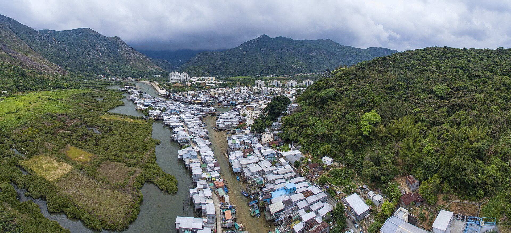
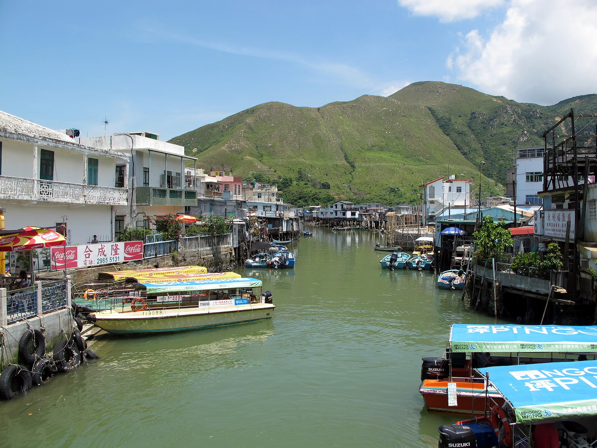
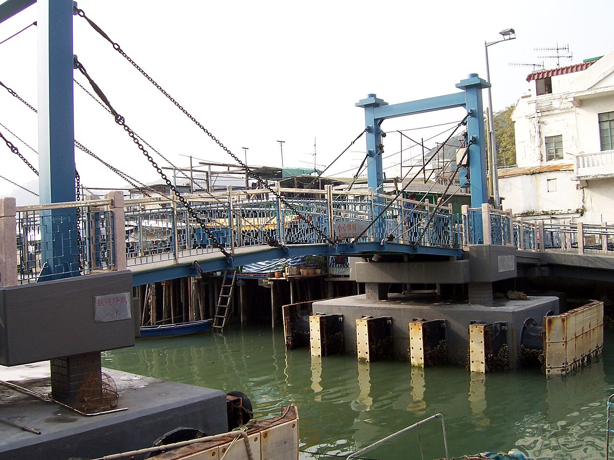
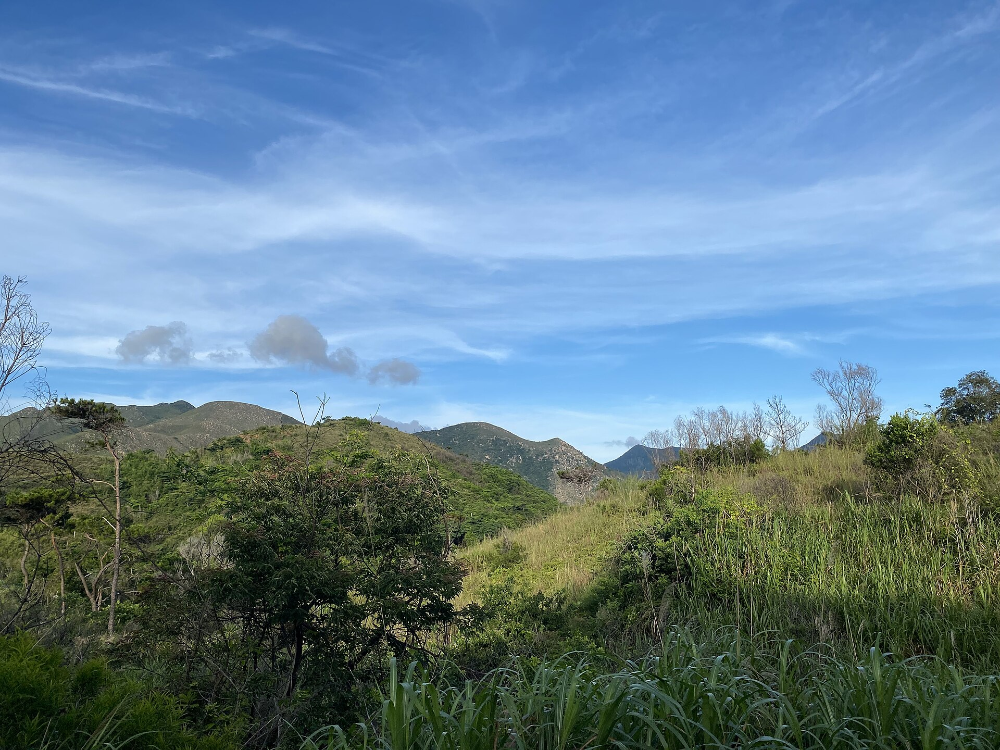
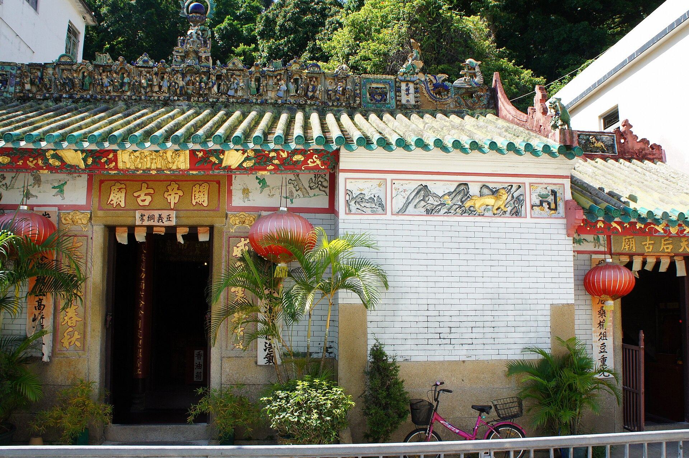
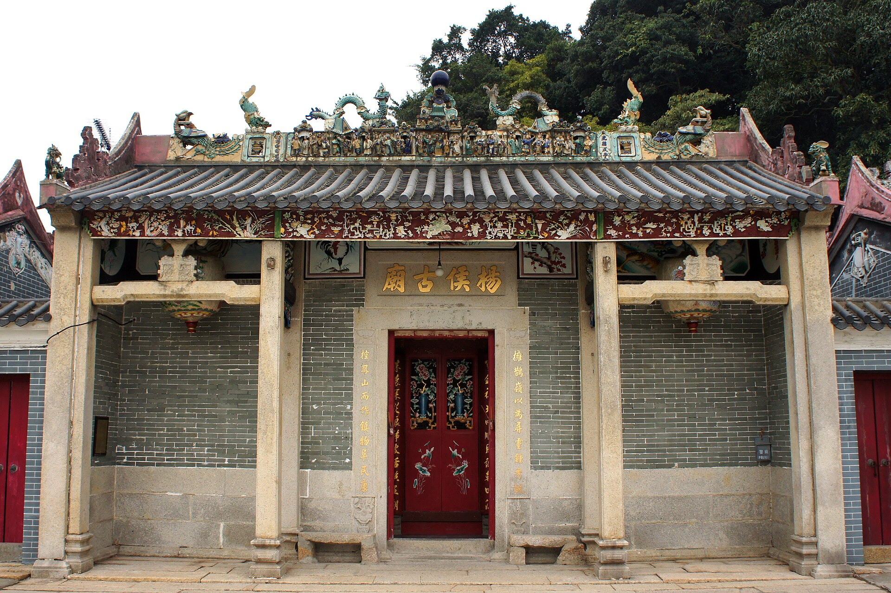
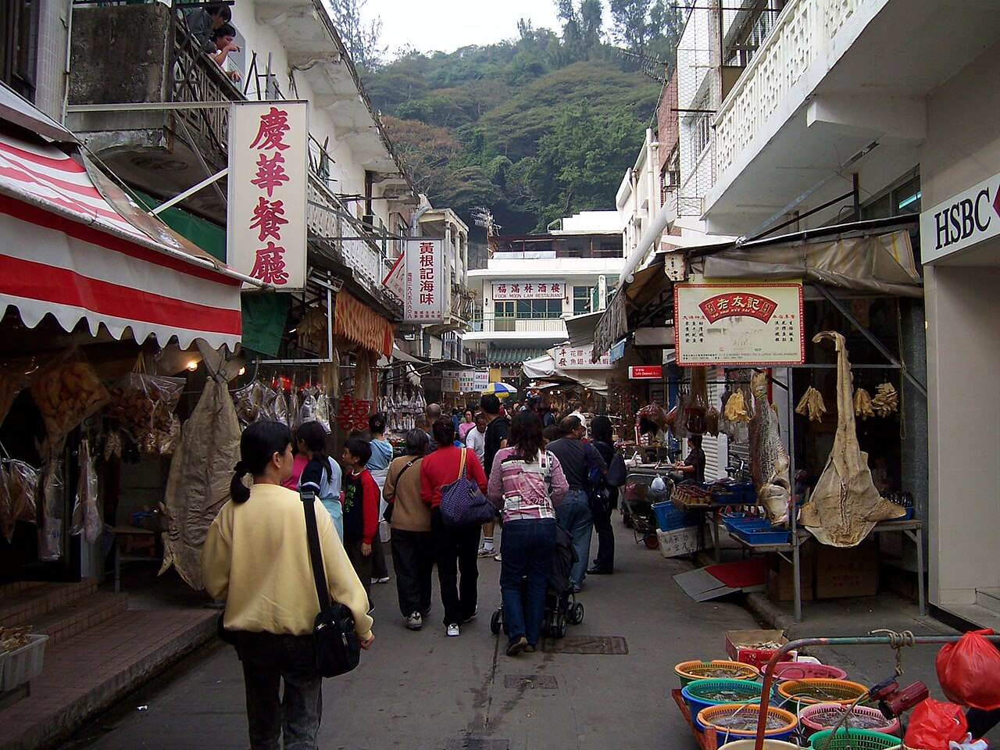
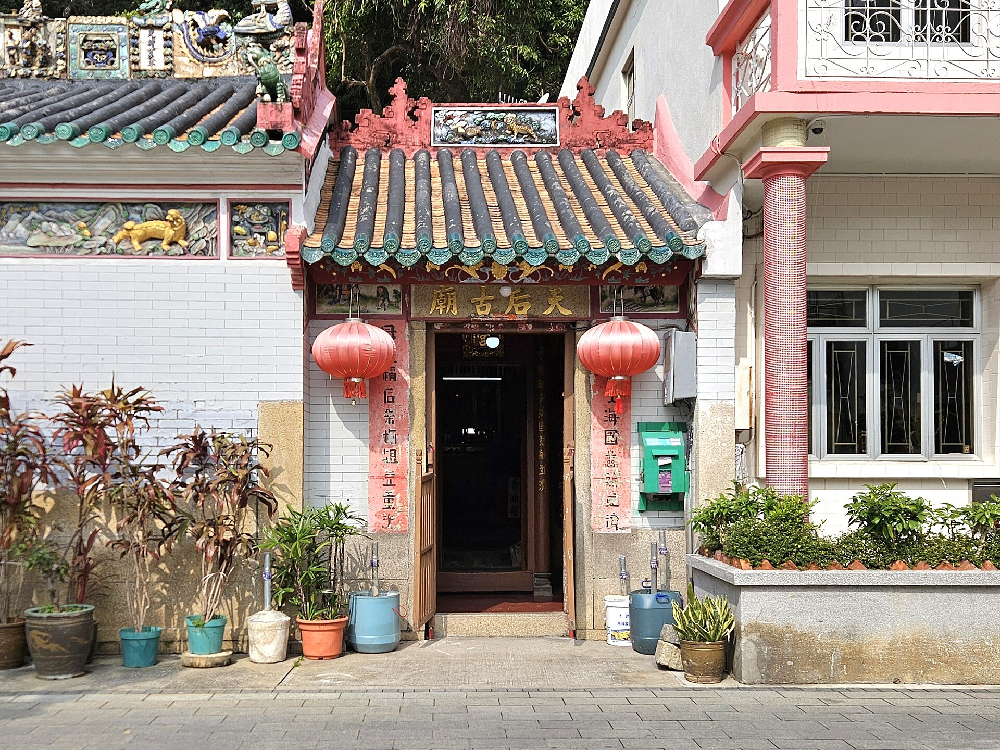
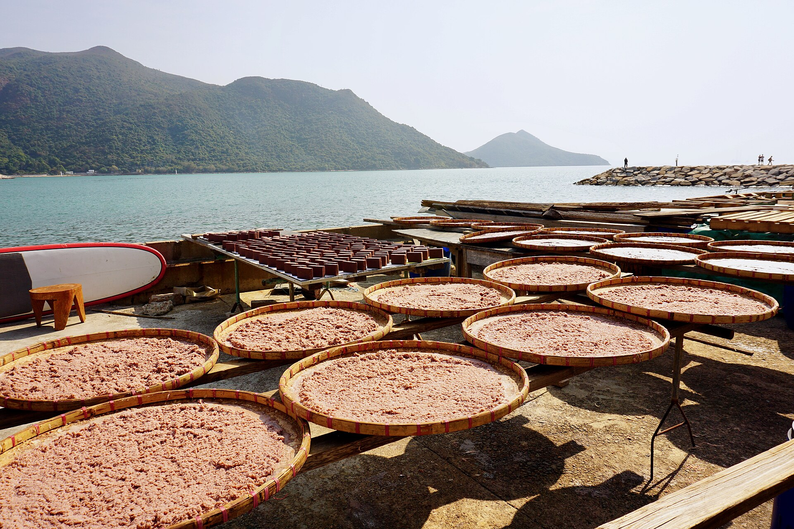

必看
棚屋群
吉慶街、永安街後方、涌尾一帶最密集。木樁、平台、鐵皮頂，加上門前的小碼頭與晾曬的魚乾，構成大澳最經典的畫面。走在棧道上，記得放輕腳步——這裡仍是別人的家。

01 · 水鄉
大澳位於大嶼山西部，三面環山、一面朝海。一條大澳涌由西向北岔開，把村落分成兩岸；兩道步行橋橫跨水面，把棚屋、街市與山徑縫在一起。
棚屋（水上人稱「棚」）是這裡的靈魂。木柱打進潮間帶的泥灘，木板搭成平台，鐵皮與杉板蓋頂。漲潮時屋子半浮在水上，退潮時露出底下的樁與泥——同一條巷，一日之內可以行兩次不同的路。
住在棚屋的多是蜑家（水上人）後代。他們以船為家、以海為田，把漁獲、鹽與鹹魚賣到珠江口對岸。今日漁船大減，但曬蝦醬的香氣、門前晾著的鹹魚、涌口泊著的小艇，仍然天天在講同一個故事。

02 · 歷史
大澳的興衰，一直跟著海裡的魚與岸上的鹽走。
大澳沿岸淺灘平緩、日照充足，適合引海水曬鹽。宋代開始，這裡已是珠江口其中一個產鹽之地，鹽成為村落最早的經濟命脈。
葡萄牙人（時稱「佛朗機」）曾在大澳一帶建立補給據點，後被明朝軍隊擊退。居民把他們紮營的地方叫作「番鬼塘」，地名一直留到今日。
清初遷界令使沿海荒廢，復界後人口回流。1699 年建楊侯廟，1713 年修天后廟，1741 年建關帝廟。乾隆年間，寶珠潭、新基、坑尾、南涌一帶滿布堤圍，淺灘被改造成鹽田，曬鹽成為家家戶戶的副業。
英國租借新界後，大澳成為香港最西的邊境墟市。漁船、鹽船、貨艇在此集散，街上酒米雜貨、海味欄、打鐵鋪一應俱全，熱鬧程度不輸內陸墟市。
港府在大澳石仔埗街的小山丘上建成大澳警署，是香港最早期的離島警署之一，由水警駐守，正正面向中港水域。這座建築後來成為今日的大澳文物酒店。
戰後大批難民湧入，加上珠江口漁場仍然豐盛，大澳人口大增，漁村進入最熱鬧的年代。當時以「大尾艇」作業，捕捉黃花魚與鰽白，單是這類漁船就多達三百艘。晒鹹魚、打蝦醬、做蠔油的作坊遍佈全村。
黃花魚產量自 1954 年起急跌，1960 年代黃花漁季幾乎消失；1970 年代珠江口漁場資源枯竭，漁民被迫轉往深海。年輕人陸續出市區讀書、打工，大澳由漁港慢慢變成「老家」。
9 月 29 日，鋼製的大澳涌行人橋落成，取代由大澳女性以人力拉纜的橫水渡（俗稱「繩橋」）。橋中段可以吊起，讓大艇通過——今日仍是全村最有代表性的畫面之一。
沙仔面一帶發生四級大火，九十多間棚屋幾乎化灰。這場災難令外界重新注視棚屋的存廢問題，也促使政府日後以改善工程而非清拆來處理大澳。
每年端午，扒艇行、鮮魚行與合心堂三個漁業行會先到楊侯廟等四間廟宇迎神，再把神像安放在神艇上，由龍舟拖行巡遊水道，祈求水陸平安。這項過百年歷史的儀式，2011 年列入國家級非物質文化遺產名錄。
2 月 27 日，舊大澳警署活化而成的大澳文物酒店開幕，只有九間客房，保留殖民地建築的拱廊、火爐與報案室。文物保育與旅遊，自此成為大澳的新關鍵詞。
週末與假期的街道擠滿遊人，平日卻只剩老人與貓。如何在「被看見」與「仍然住人」之間取得平衡，是大澳此刻最真實的功課。
03 · 景點
由涌口一路行到虎山，全程不過三、四公里，卻像走過三個年代。
吉慶街、永安街後方、涌尾一帶最密集。木樁、平台、鐵皮頂，加上門前的小碼頭與晾曬的魚乾，構成大澳最經典的畫面。走在棧道上，記得放輕腳步——這裡仍是別人的家。

1996 年落成的鋼橋，中段可吊起讓船通過。站在橋中央，左右兩邊都是棚屋與倒影，是全村最方便的取景位。

連接大澳島與新基的木橋，橋身窄得只容兩人並肩。橋上看棚屋最貼近水面，也是看日落的好位置。

1902 年落成，二級歷史建築，2012 年活化成九間房的精品酒店。白色外牆、拱形長廊、面向珠江口的露台，是大澳最「不像大澳」的一角。非住客也可到餐廳與觀景台，看看對岸的港珠澳大橋。

由少林武術文化中心旁的登山口上走，約 20 分鐘就到山脊。整條山徑兩側裝上紅色欄杆，遠看像一道貼在山上的紅橋。山頂可俯瞰整個大澳、機場方向，以及橫跨海面的港珠澳大橋——黃昏時分最好看。

相傳始建於明代弘治年間（1488–1505），是大澳最古老的廟宇，現列二級歷史建築。兩進式嶺南建築，屋脊有楊家將陶塑，廟內保存清代碑記。

建於 1699 年，紀念南宋名臣楊亮節，是大澳的主廟。每年端午龍舟遊涌，三個漁業行會先來這裡迎神，儀式由此開始。

一條街走完大澳的經濟史：鹹魚、蝦膏、花膠、魷魚乾、銀魚仔、紫貝天葵，還有門口擺著白雪公主公仔的老士多。買海味記得問價、看成色。

大澳有不止一間天后廟，反映水上人對海神的依賴。附近一帶仍可看到舊鹽田的堤基痕跡，是大澳「鹽」時代僅餘的線索。
大澳位處鹹淡水交界，泥灘上長滿紅樹林，招潮蟹與彈塗魚在脚下橫行。涌口有街坊小艇載客出海，數十元一程，運氣好可以在珠江口一帶遇上中華白海豚——記得保持距離，不要餵食。
04 · 美食
大澳的廚房沒有menu，只有當日曬好的東西。

鎮村之寶
大澳的蝦醬，用珠江口的小銀蝦加鹽發酵，再經日曬、研磨而成。蝦膏是同一件事的濃縮版——水分更少、顏色更深、鹹香更狠。
每年四至九月是銀蝦汛期，村內仍有人在天台曬蝦醬，一打開蓋，整條巷都知。買回家炒通菜、蒸豬肉、撈麵，一匙就夠。
黃花、鰽白、馬友，一層鹽一層魚，壓石、翻缸、曬乾。梅香是發酵後那種濃烈，不是人人受得住，但用來蒸肉餅是另一層次。
老餅家的招牌。麵粉、蛋與油的粉糰落油鑊，發起成金黃色球狀，出鍋後滾一層砂糖。外脆內軟，咬下去滿口蛋香，要趁熱食，放涼就塌。
比市區的大一倍，魚肉打得夠，咬開有纖維感。咖喱汁或清湯各有捧場客，行到街口就聞到。
糯米皮包眉豆、花生或蘿蔔，用葉墊底蒸。雞屎藤茶果顏色深、帶草本香，是大澳與客家村落共有的味道。
整隻魷魚壓平，炭火慢慢烤，掃上蜜糖與醬油。香氣是最有效的路牌，幾乎每個遊客手上都有一隻。
本地草本煮成的深紅色涼茶，微酸。夏天行完虎山，一杯冰的比任何汽水都救命。
花膠、瑤柱、魷魚乾、銀魚仔、蝦乾、蠔豉。價錢視大小與年份，最好請店家教你分等級——這也是逛海味街的樂趣。
行到累，坐低一碗熱豆花，黃糖自己加。沒有花巧，但大澳的節奏本來就該這樣。
本地人貼士：海味與蝦醬在平日買，選擇多、議價空間大；週末下午三點後，最熱門的沙翁與茶果經常售罄。蝦醬屬發酵食品，帶上飛機前請確認目的地入境規定。
05 · 行程
落車先買一支水。沿大澳街市街入村，兩旁已是海味鋪。
看廟脊陶塑與清代碑記，再鑽入吉慶街看棚屋與老士多。
先坐一轉小艇從水面看棚屋，再上橋拍兩岸倒影。
魚蛋、茶果、炭燒魷魚、豆腐花，邊行邊食；或找間小店食海鮮粥。
沿海邊走到舊警署，在觀景台看珠江口與港珠澳大橋。
由少林武術文化中心旁上山，約 20 分鐘。山脊紅欄杆一路陪你走到看日落的位置。
趁天未全黑落山，買蝦醬與鹹魚，搭 11 號巴士返東涌。
東涌站 B 出口 → 大嶼山巴士 11 號 → 大澳總站，約 50 分鐘。
假日班次密，但排隊人龍長；可考慮由昂坪搭 21 號。
昂坪 360 到昂坪市集 → 21 號巴士 → 大澳，約 20 分鐘。
適合想順便看天壇大佛的人，全程約 1.5 小時。
屯門 ↔ 東涌 ↔ 沙螺灣 ↔ 大澳，由屯門直去約 70 分鐘（快船）。
班次疏落，出發前必查船期；海面風浪大時或停航。